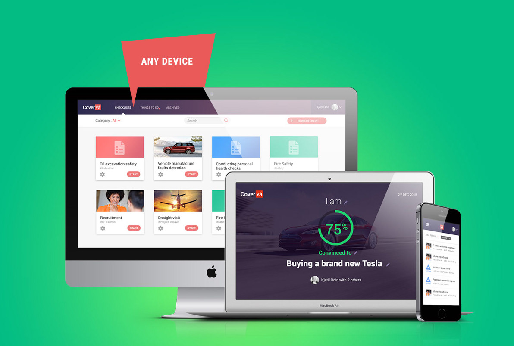
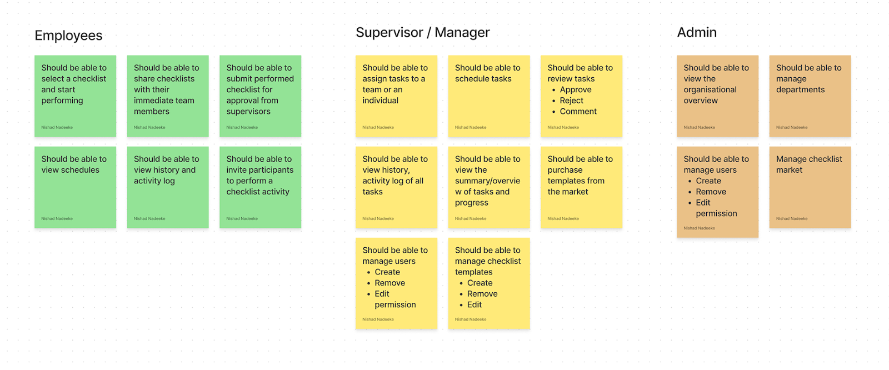
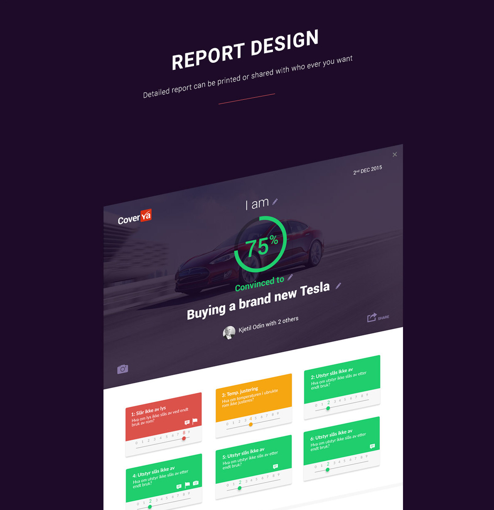
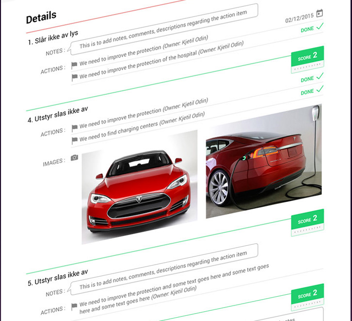
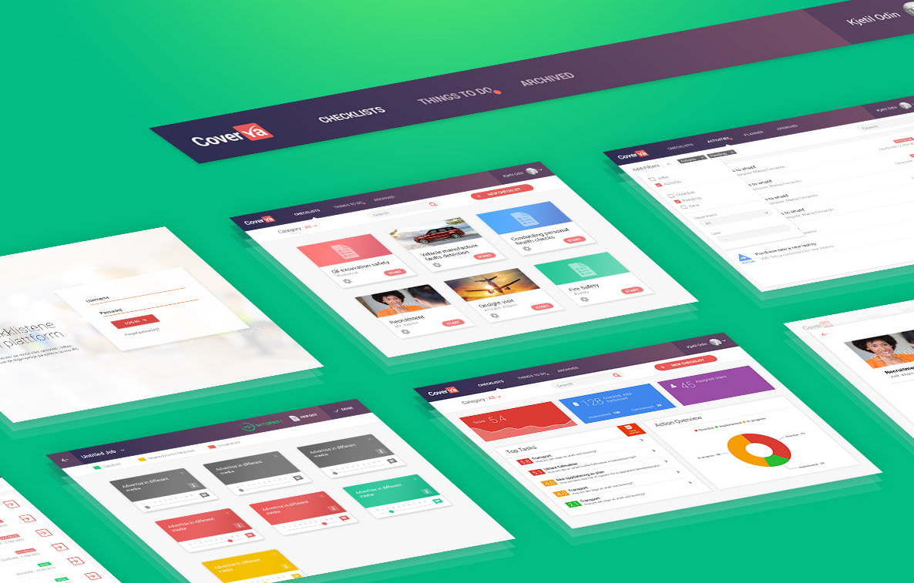

From Manual Friction to Digital Flow: Streamlining Enterprise Audits
Role
Lead UX Designer
Timeline
6 Months
Platform
Mobile & Web
Overview
WhatIf is a Norwegian company specialised in providing intuitive risk assessment solutions to the market. CoverYa is a responsive web app designed for WhatIf AS to digitize critical organizational audits and risk assessments. As Lead UX Designer, I transformed manual procedures into a smart, dynamic checklist platform that ensures procedural compliance across industries like healthcare and salmon farming.
The Challenge
Existing audit processes were fragmented and paper-based, leaving employees without clear guidance and management unable to efficiently locate evidence. This lack of a centralized system caused significant administrative waste and operational friction for both leadership and field teams.
The Objective
The goal was to build an intuitive digital ecosystem that eliminates manual "admin hassle" through automated workflows and real-time progress tracking. We aimed to provide field workers with a seamless documentation tool while giving managers instant visibility into organizational safety and compliance.

The Process
-
1
Understand - Research & Discovery
I collaborated with the Norwegian research team to analyze the target audience through in-depth interviews within the salmon farming and hospital sectors. This research allowed me to identify core user groups and develop comprehensive personas—Ole (Manager) and Mikkel (Manual Laborer)—to ground our design strategy in real human needs.
-
Personas
Ole, 42
Facility Manager
Occupation: Office Leader (Bachelor's degree)
Residence: House in a Norwegian city
Family: Wife & 2 children (12, 10 y/o)
Behaviors & Beliefs
Energetic, leading, and confident. Theoretical approach. Comfortable with computers but hesitant with new devices. Uses WhatIf for risk analyses and safety compliance. Struggles with motivating employees and manual evidence retrieval.
Needs & Goals
- Awareness: Identify new potential dangers
- Compliance: Ensure procedures are followed
- Traceability: Track status of finished checks
- Automation: Scheduled activities & reminders
Mikkel, 41
Field Operator / Manual Laborer
Residence: Countryside house, Norway
Family: Wife & 3 children (17, 15, 12 y/o)
Behaviors & Beliefs
Energetic, outgoing, and practical. Tech-averse; owns a smartphone but avoids advanced features. Relies on paper filing and often forgets physical checks.
Needs & Goals
- Mobile, anytime access to checklists
- Simple field documentation
- Activity reminders & upcoming schedules
-
2
Diverge & Decide
Using an affinity diagram, we organized user needs into functional groups for employees, supervisors, and admins. From there, I utilized rapid sketching techniques to generate a high volume of ideas, which were then prioritized based on impact and technical viability to map out the initial user flows.
Affinity Diagram
Leveraging an affinity mapping exercise, we synthesized raw user insights into actionable functional groups, ensuring our design solutions directly addressed core user needs.

-
3
Prototyping
Our design hypotheses and major features were translated into interactive MVPs using InVision. This stage focused on building a responsive framework that worked across any device, ensuring that field workers could access their checklists whether on a tablet or a smartphone.
User Flows
admin_panel_settingsPersona: Ole (The Manager)
Goal: Create a high-priority safety audit and monitor team completion in real-time.
Step 1Entry & Dashboard
Logs in to the web portal and views the organizational compliance overview.
Step 2Activity Scheduling
Creates a new audit activity and sets the required frequency and deadline.
Step 3Assignment
Assigns the task to specific employees or departments (e.g., Mikkel's team).
Step 4Automated Notification
System triggers instant alerts to all assigned field workers across devices.
Step 5Monitoring & Verification
Tracks live progress bars and views uploaded evidence as tasks are completed.
Step 6Review & Archive
Approves final reports and archives the audit for juridical compliance.
engineeringPersona: Mikkel (The Manual Laborer)
Goal: Quickly document a required field check with minimal "admin hassle".
Step 1Smart Notification
Receives a push notification on his mobile device for an upcoming check.
Step 2Simplified Start
One-tap access from notification directly into the specific checklist.
Step 3Guided Execution
Follows clear, high-contrast instructions for each safety checkpoint.
Step 4Evidence Capture
Uses the in-app camera to snap photos of conditions for instant proof.
Step 5One-Tap Submission
Signs off digitally and submits the entire report in seconds.
Step 6Confirmation
Receives visual confirmation and task is cleared from his daily list.
-
4
Validate - Usability Testing
I conducted remote, guided usability testing via Lookback to gain deep user empathy and identify friction points. Additionally, I performed multivariate and preference testing on visual designs to ensure the final interface was both aesthetically pleasing and highly user-friendly.
-
5
Iterate
The process concluded with continuous refinement during the sprint. We empathized with timely user feedback to refine newly added features, ensuring the solution effectively reduced manual admin work and eliminated operational hassle.



The Solution
"We didn't just build an audit tool; we eliminated the operational 'hassle' that sits between a company’s safety procedures and its human execution."
The final solution bridges the gap between complex organizational requirements and the practical needs of frontline workers, fostering a culture of safety and transparency through real-time visibility and automated workflows.
- check_circle Smart, Dynamic Checklists: Replaces rigid paper forms with responsive digital lists that adapt to specific task requirements and organizational procedures.
- check_circle Centralized Compliance Hub: Provides leadership with a unified platform to monitor task status, track employee progress, and instantly locate historical audit evidence.
- check_circle Detailed Analytics & Reporting: Generates comprehensive reports that can be easily printed or shared, facilitating better decision-making and fulfilling juridical requirements.